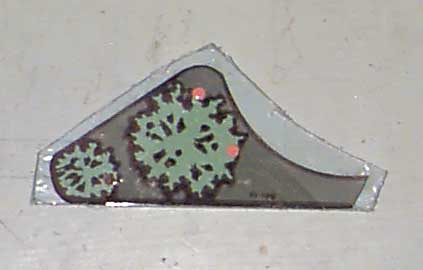

This is what it looks like after a rough cut. Doing it this way makes it easier to hold the material while cutting.
Entire article and photographs copyright © 1998 Dan Wilga. All rights reserved. May not be reprinted without permission.